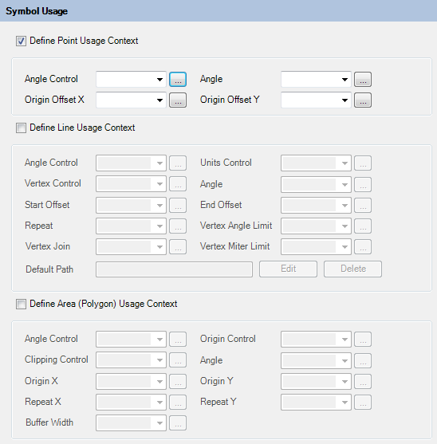

Understanding Symbol Definitions
Symbol Definitions provide signifcantly advanced stylization options for map features as opposed to the stylization options provided by the Layer Definition.
A Symbol Definition exists in two forms:
A Simple Symbol Definition, which supports the definition of a symbol based on vector geometry, an image, or text. Simple Symbol Definition resources can also contain usage context settings which specify how it is applied when used to stylize point, line, or area geometry. Additionally, stylization settings can be parameterized and exposed in the form of parameter definitions, which can be overridden on a per-layer basis.
A Compound Symbol Definition allows multiple Simple Symbol Definitions to be combined into a composite symbol.
Components of a Simple Symbol Definition
A Simple Symbol Definition is composed of the following components:
- A collection of graphics
- A collection of 0 or more symbol parameters
- A point, line or area usage context
- Advanced symbol settings
The Simple Symbol Definition Editor provides the user interfaces to edit all aspects of the Simple Symbol Definition.
The Simple Symbol Definition Editor
General Settings
The General Settings section of the editor allows you to specify the name and description of this symbol

Graphics
The Graphics section of the editor allows you to specify the visual elements of the symbol.

You can add 3 different types of graphics:
- Text Elements
- Images
- Geometric Paths
Symbol Parameters
The Symbol Parameters section of the editor allows you to specify parameters for this symbol.

Nearly all properties in the Simple Symbol Definition can reference a symbol parameter instead of specifying a hard-coded value. Such parameters can be specified on a per-layer basis via FDO expressions, allowing for symbols whose stylization behaviour is driven by the underlying feature data.
Symbol Usage
The Symbol Usage section of the editor allows you to define which geometry types this symbol can be used with

Note
You must specify at least one usage context. Otherwise, your symbol is not usable in any layer definition.
Advanced Settings
The Advanced Settings section of the editor allows you to specify resize box settings of the Simple Symbol Definition

The Compound Symbol Definition Editor
The Compound Symbol Definition Editor allows you to combine multiple Simple Symbol Definitions into a single composite symbol.

The Simple Symbol Definitions you combine can be either:
- A reference to an existing Simple Symbol Definition
- An inline Simple Symbol Definition
Inline Simple Symbol Definitions use the same Simple Symbol Definition editor, embedded within the existing Compound Symbol Definition Editor.
Previewing
Both Simple and Compound Symbol Definition editors support previewing, by clicking the Preview button in the main toolbar while the editor is the active tab.
This generates an enlarged version of the icon that you would normally see for this layer if it was displayed in the AJAX or Fusion viewer legend.